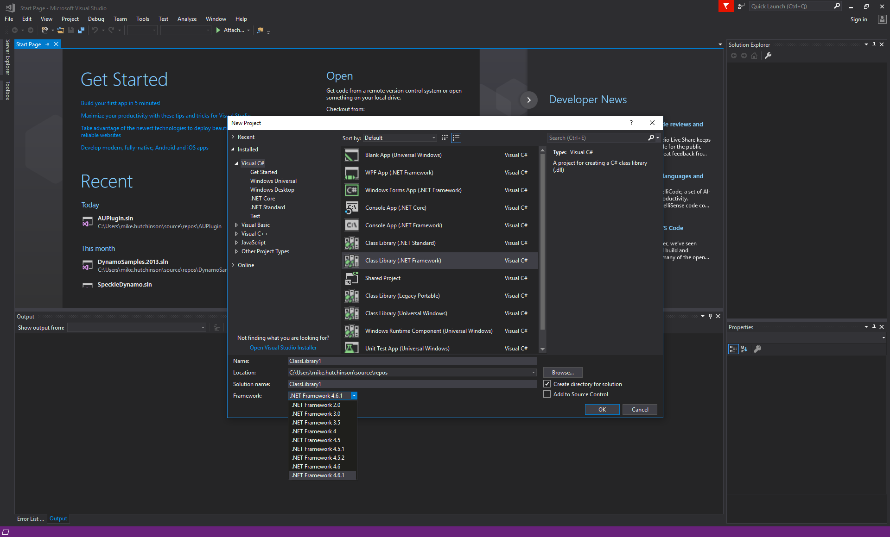
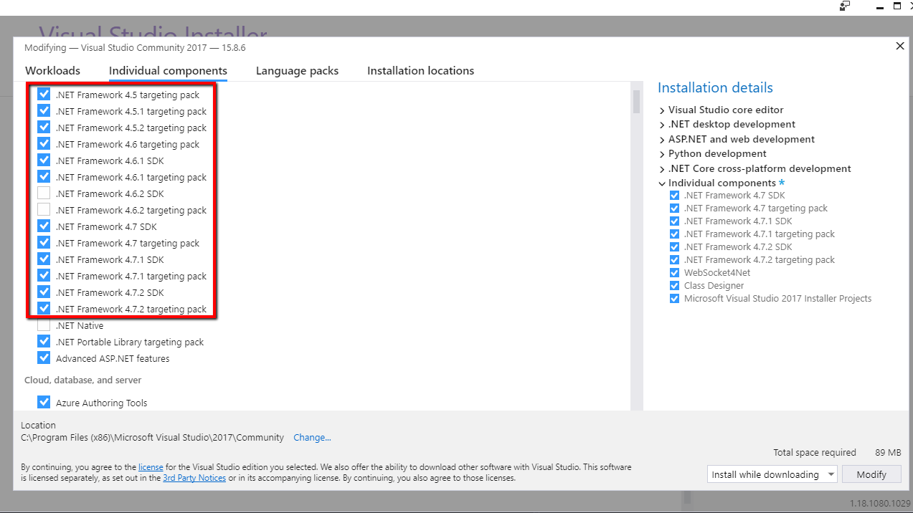

Here are a couple more Revit API discussion forum threads well worth highlighting:
Question: How can I get all associated rebars which attach to a structural element such as a column by picking that?
Answer: Jeremy initially suggested workarounds making use of filtered element collectors. Unfortunately, that was not very helpful in this case.
Happily, Einar Raknes came to the rescue pointing out the real solution for this:
You can use the RebarHostData class and the GetRebarsInHost method to retrieve all rebars associated with a rebar host.
To make sure you pick a valid Rebar Host; you can optionally create a selection filter for it like this:
public class RebarHostSelectionFilter : ISelectionFilter { public bool AllowElement( Element e ) { return null != RebarHostData .GetRebarHostData( e ); } public bool AllowReference( Reference r, XYZ p ) { return false; } }
Pick a rebar host, and retrieve the list of rebars from it like this:
ref1 = uidoc.Selection.PickObject( ObjectType.Element, new RebarHostSelectionFilter(), "Pick a rebar host" ); Element rebarHost = doc.GetElement( ref1 ); IList<Rebar> rebarsInHost = RebarHostData .GetRebarHostData( rebarHost ) .GetRebarsInHost();
Many thanks to Einar for pointing this out!
Question: I am walking through the Autodesk University 2018 course on Revit add-ins:
Revit 2019.1 add-in programming apparently requires the .NET framework 4.7.
Figure 20 Create Project

Class Library .NET Framework
However, I cannot seem to get access to .NET Framework 4.7.
I have turned this on in Windows Features:
.NET Framework 4.7 in Windows features
What am I missing?
Answer: In Visual Studio, go to Tools → Get Tools and Features → Individual Components → tick the .NET version you want to install:
VS Tools
Many thanks to Salvatore Dragotta for pointing this out!
The Building Coder keeps on harping about the importance of fuzz, cf. the recent discussion of fuzzy comparison versus exact arithmetic for curve intersection.
Here is yet another example underlining the importance of fuzz, described by Bram Weinreder in the Revit API discussion forum thread on not all curtain walls behaving equally:
Question: I've made an add-in to dimension curtain walls, and in my test projects it was working fairly well. That's to say, tagging worked 100% (easy win), but elevation tags and dimensioning didn't always work (let's say 70% or 80% worked for me, but for some users and some projects 100% produced the same failure).
The problem is that I'm not getting the total widths of these windows, in rare cases the total heights, or the bottom reference for spot elevations. I'm getting the references based on physical mullion faces with a certain normal, for mullions that work in a certain direction (this works very well, generally, if I need all unfiltered references). It's probably where I filter out the exterior faces that I make a mistake.
Example of how I do my filtering:
foreach( Face fa in faces ) { Mullion m = doc.GetElement( fa.Reference ) as Mullion; LocationPoint lp = m.Location as LocationPoint; Reference r = fa.Reference; if( direction == Direction.horizontal ) { if( lp.Point.Z == bb.Min.Z && !minAdded && fa.ComputeNormal( new UV( 0, 0 ) ).X > 0 ) { totaalMaten.Append( r ); minAdded = true; } if( lp.Point.Z == bb.Max.Z && !maxAdded && fa.ComputeNormal( new UV( 0, 0 ) ).X > 0 ) { totaalMaten.Append( r ); maxAdded = true; } } else if( direction == Direction.vertical ) { if( lp.Point.X == bb.Min.X && !leftAdded && fa.ComputeNormal( new UV( 0, 0 ) ).X > 0 ) { totaalMaten.Append( r ); leftAdded = true; } if( lp.Point.X == bb.Max.X && !rightAdded && fa.ComputeNormal( new UV( 0, 0 ) ).X > 0 ) { totaalMaten.Append( r ); rightAdded = true; } } }
The Normal is always relative to the mullion interior coordinates; in short this is filtering the faces that are looking out. But apparently, this is not an adequate method in all situations.
Does anyone know whether there can be a difference between curtain walls that makes them behave differently?
Side note: is there a more reliable way to get the exterior references (say, by bounding box)?
Thanks in advance.
Answer: And I found my own answer.
What's vexing me is that these references don't have GlobalPoints, or I would've stumbled upon this quicker.
The error is in this part of the filtering:
if( lp.Point.Z == bb.Min.Z */.../*)
I'm not sure whether it's due to the conversion between imperial and metric, but I forgot the fundamental rule that you can't always directly compare two XYZ values.
I replaced the condition with this:
if( Math.Abs( lp.Point.Z - bb.Min.Z ) < 0.005 */.../*)
This translates to a tolerance of about 1.5mm.
Could've probably added three more zeroes there, but this is precise enough for our case.
Many thanks to Bram for pointing this out!